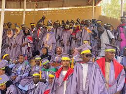

UDUS Holds 2024 Convocation Ceremony
Published on January 3, 2025
The University’s 2024 Convocation Ceremony was a grand success, with numerous distinguished guests, faculty, and students celebrating academic achievements. The ceremony featured various speeches, including one from the Chancellor and the Vice Chancellor, celebrating the accomplishments of the graduating students. Several students were recognized for their outstanding performance in academics, sports, and extracurricular activities. The event was filled with excitement and emotions as students prepared to take the next step into the world beyond the university.
Back to News